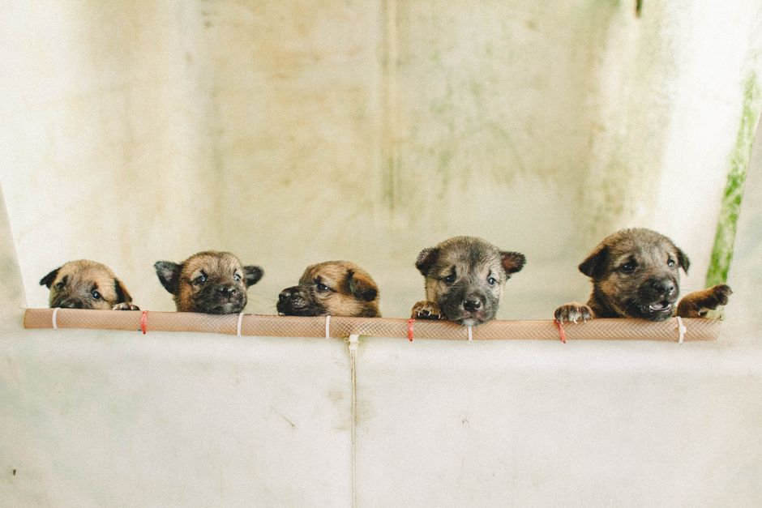

Cleaning Your Dog's Bed and Sleeping Area: Top Tips for Effective Hygiene

Photo: Bảo Minh / Pexels
Cleaning your dog's bed and sleeping area keeps both comfort and health in order. A clean spot reduces skin irritation, bacteria and odor. If your dog sleeps in a doghouse or kennel, the same steps apply.
1. Decide how deep to clean
A quick clean can be done every day: shake out the bedding and remove loose hair and debris. A deep clean, with washing and disinfecting if needed, is usually enough once a week.
2. Remove hair and debris
Vacuum the bed, the floor around it and any fabric with a soft brush attachment. Shake out blankets outdoors.
3. Wash the bedding
Follow the care label. Wash bedding weekly in warm or hot water with a fragrance-free detergent, run an extra rinse so no soap is left behind, and dry it completely before your dog goes back to it. A damp bed attracts mold and odor.
4. Clean the hard surfaces
Wipe plastic, wood or metal surfaces with mild soap and water. Use a disinfectant only when needed, choose one labeled safe for pets, follow the label, rinse and let the surface dry fully. Never mix bleach with ammonia or other cleaners, and avoid strongly scented or essential-oil cleaners, which can irritate or poison pets.
5. Let it dry and air out
Leave the area to air out until it is completely dry and any smell of cleaner is gone before your dog comes back.
6. Keep a spare bed
A second bed lets you wash one while the other is in use. Changing cleaning products often is not necessary: choose a gentle, fragrance-free one and stick with it.
7. Choose easy-care bedding
Machine-washable, fully dry-able bedding makes the routine simple. Replace beds that are torn, flat or chewed through, because pieces of stuffing can be swallowed.
Check your dog too
When you clean, look at the bedding for black specks (flea dirt), hair loss or stains. If your dog scratches a lot or has red or irritated skin, see your vet.
Recommended products
As an Amazon Associate, I earn from qualifying purchases.